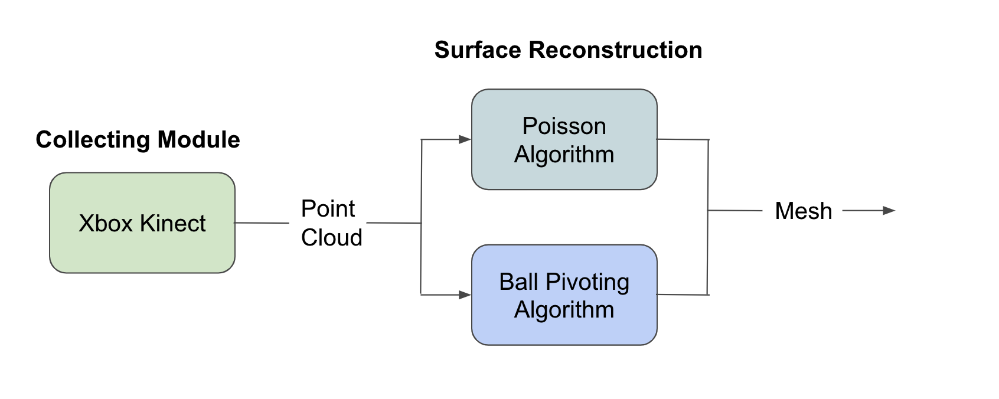

This proposal provides an overview of a promising technique in computer vision and graphics, which involves reconstructing a colored 3D mesh from point clouds captured using Kinect sensors. The goal is to create a pipeline that can generate texture meshes from Kinect scans of objects or scenes that can be rendered.
The objective of this project is to tackle the challenge of creating texture meshes from point clouds obtained through Kinect sensors. This is a significant problem as it plays a vital role in various fields, such as virtual reality, gaming, digital art, and computer-aided design. The process of generating high-quality and accurate 3D models is complex as it requires combining several components such as point cloud processing and mesh reconstruction algorithms. To overcome this obstacle, we intend to design a comprehensive pipeline that will involve capturing point cloud data through Kinect sensors, extracting relevant information by processing the data, utilizing mesh reconstruction algorithms such as Ball-Pivoting algorithm and Poisson Surface Reconstruction algorithm, and evaluating the quality of the reconstructed meshes using benchmark datasets like the Stanford 3D Scanning Repository. Moreover, our approach will include capturing the real color of the object and projecting it onto the reconstructed mesh. Our primary goal is to gain a deeper understanding of 3D scanning and reconstruction technologies while also making a significant contribution to the field of computer vision and graphics.
Our project aims to develop a comprehensive pipeline that takes input from Kinect scanning of a scene or an object and generates texture meshes that can be rendered. The pipeline will consist of multiple interconnected parts that work together to achieve the desired outcome.
1. Kinect Input: We will utilize the Kinect sensor to capture point cloud data of the object or scene of interest. The Kinect sensor is capable of capturing depth and RGB information, which will be used as the input for our pipeline.
2. Point Cloud Processing: Once the point cloud data is obtained from the Kinect sensor, we will process it to extract relevant information. This may involve filtering, noise reduction, and data normalization techniques to prepare the point cloud data for mesh reconstruction.
3. Mesh Reconstruction: (1 Baseline Plan) We plan to implement an algorithm for mesh reconstruction: the Ball-Pivoting algorithm. The Ball-Pivoting algorithm is a widely used method for reconstructing triangle meshes from point cloud data. (2 Advanced Plan) If the Ball-Pivoting algorithm goes well, we will further implement the Poisson Surface Reconstruction algorithm, which is another surface reconstruction algorithm which is also known for producing smooth and visually appealing meshes.
4. Mesh Quality Evaluation: To assess the quality of our mesh reconstruction implementation, we will compare the results with those obtained from the Stanford 3D Scanning Repository, which is a widely used benchmark dataset for evaluating 3D scanning and reconstruction methods. This will allow us to measure the accuracy and fidelity of our reconstructed meshes and validate the performance of our pipeline. We will select MOS (Mean Opinion Score) as our metric to determine the performance of our system.
5. Color the reconstructed mesh: (Advanced Plan) We will capture the real color of the object and project the color onto the reconstructed mesh.
|  |
In summary, our project aims to develop a pipeline that takes Kinect scanning input, processes the point cloud data, and applies mesh reconstruction algorithms to generate texture meshes that can be rendered. By comparing the results with a benchmark dataset, we will be able to evaluate the quality of our implementation and ensure that our pipeline produces accurate and visually appealing meshes. This project has the potential to find applications in fields such as virtual reality, gaming, computer-aided design, and digital art. Overall, our pipeline has the potential to contribute to the advancement of 3D scanning and reconstruction technologies, and we are excited about the prospects of our project. As we progress, we will continue to refine and optimize our pipeline to achieve the best possible results. Through this project, we hope to make a meaningful contribution to the field of computer vision and graphics.